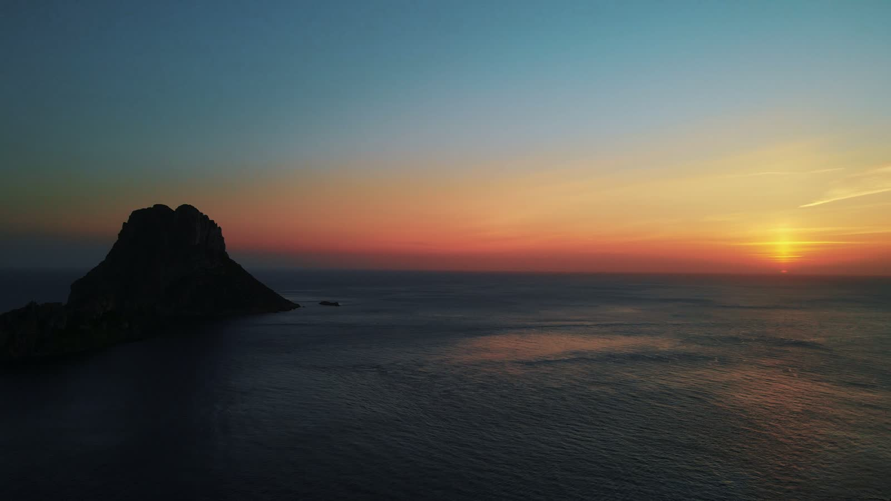

90s Trance Classics (1997–2001)
12 Oct 2026 · 14 tracks · 861 plays
No Trends, Just Classics
Long DJ sessions of the trance, eurodance and house that soundtracked Ibiza in the 90s and early 2000s. Mixed by hand, track by track, with every tracklist on this site.

Latest session
01Fresh from the decks
12 Oct 2026 · 14 tracks · 861 plays
23 Sep 2026 · 13 tracks · 1.3K plays
31 Aug 2026 · 14 tracks · 3.4K plays
9 Aug 2026 · 33 tracks · 9.7K plays
11 Jul 2026 · 13 tracks · 3.4K plays
22 Jun 2026 · 15 tracks · 5.2K plays
12 Jun 2026 · 16 tracks · 3.4K plays
3 Jun 2026 · 13 tracks · 5.3K plays
02The series
103 sessionsIbiza Trance ClassicsVocal anthems and forgotten gems from the golden era of trance, mixed track by track. 20 sessionsIbiza SpecialsEurodance and 90s dance party mixes: the hits that filled every club and every car radio.
20 sessionsIbiza SpecialsEurodance and 90s dance party mixes: the hits that filled every club and every car radio. 3 sessionsTrance MastersLong sessions built around the legends of trance.
3 sessionsTrance MastersLong sessions built around the legends of trance. 2 sessionsIbiza Trance LegendsOne artist, one session: the story of a trance legend in a mix.
2 sessionsIbiza Trance LegendsOne artist, one session: the story of a trance legend in a mix. 1 sessionIbiza House ClassicsSunset house from the White Isle.
1 sessionIbiza House ClassicsSunset house from the White Isle. 4 sessionsTrance Classics ReworkedTimeless melodies, new energy.
4 sessionsTrance Classics ReworkedTimeless melodies, new energy. 4 sessionsTrance Classics MashupsTwo classics, one track: mashups of the anthems you know.
4 sessionsTrance Classics MashupsTwo classics, one track: mashups of the anthems you know.03Most played
18 Dec 2024 · 8 tracks · 755K plays
6 Dec 2024 · 12 tracks · 565K plays
9 Dec 2024 · 13 tracks · 362K plays
6 Mar 2026 · 19 tracks · 298K plays
14 Dec 2024 · 7 tracks · 248K plays
12 Aug 2025 · 20 tracks · 207K plays
04Shorts


05The artists
06Playlists


 Ibiza Trance Classics Radio101 videos · YouTube playlist
Ibiza Trance Classics Radio101 videos · YouTube playlist Shorts24 videos · YouTube playlist
Shorts24 videos · YouTube playlist
 Ibiza Specials22 videos · YouTube playlist
Ibiza Specials22 videos · YouTube playlist

 Top 5 Trance Classics Shorts14 videos · YouTube playlist
Top 5 Trance Classics Shorts14 videos · YouTube playlist

 Trance Classics Mashups4 videos · YouTube playlist
Trance Classics Mashups4 videos · YouTube playlist

 Classics Reworked4 videos · YouTube playlist
Classics Reworked4 videos · YouTube playlist
 Ibiza Trance Legends2 videos · YouTube playlist
Ibiza Trance Legends2 videos · YouTube playlist Ibiza House Classics1 videos · YouTube playlist
Ibiza House Classics1 videos · YouTube playlist
♥Patreon
TIMELESS IBZ is one person, a pair of decks and a crate of records that refuse to be forgotten. If these sessions soundtrack your drives, your workouts or your sunsets, you can help the next one happen.
07About
TIMELESS IBZ started in October 2024 with one idea: the music that soundtracked Ibiza between 1993 and 2005 deserves better than a shuffled playlist. Every session is mixed by GRK in the studio, beatmatched and blended like a real DJ set — vinyl-style pitch, long blends, no AI and no shortcuts.
Ibiza Trance Classics is the main series, with more than a hundred episodes of vocal anthems, uplifting gems and the B-sides nobody plays anymore. Around it: eurodance party mixes, artist sessions, sunset house and reworks of the melodies that never grew old.

A new session every week. Turn on notifications so you never miss one.
Subscribe on YouTube